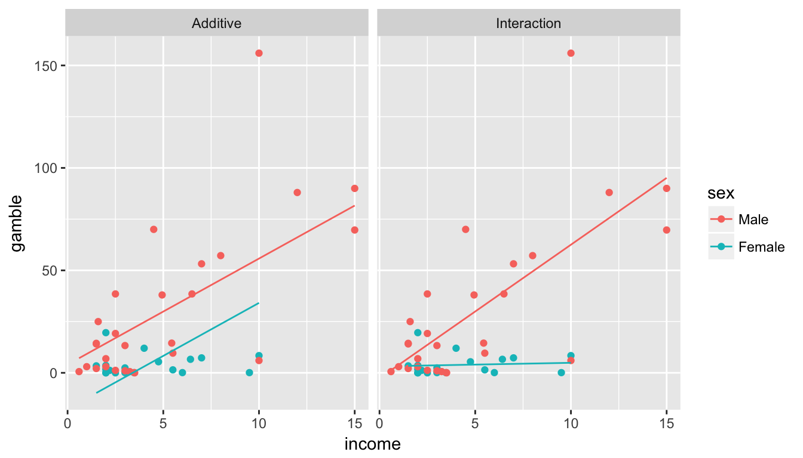
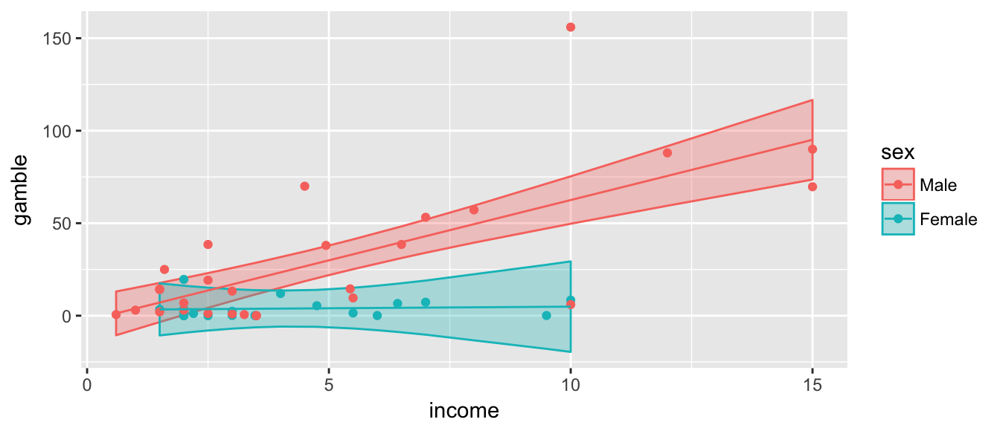
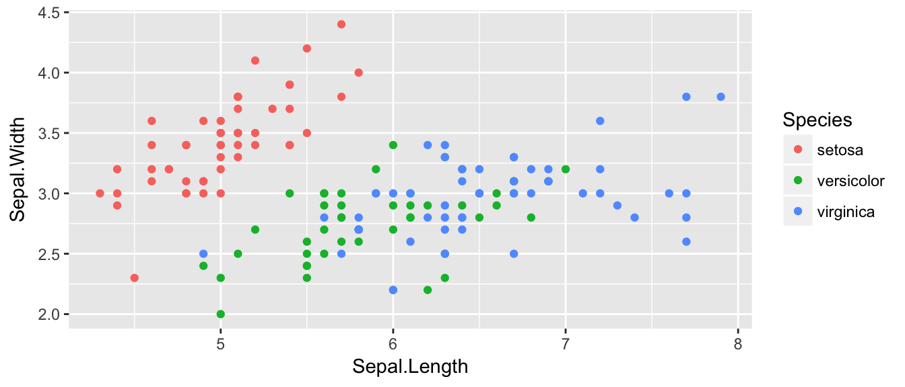

Chapter 4 Analysis of Covariance (ANCOVA)
library(faraway) # for the data
library(ggplot2) # my favorite graphing package
library(dplyr) # for the %>% operatorOne way that we could extend the ANOVA and regression models is to have both categorical and continuous predictor variables. This model is commonly called ANCOVA which stands for Analysis of Covariance.
The dataset teengamb in the package faraway has data regarding the rates of gambling among teenagers in Britain and their gender and socioeconomic status. One question we might be interested in is how gender and income relate to how much a person gambles. But what should be the effect of gender be?
There are two possible ways that gender could enter the model. Either:
We could fit two lines to the data one for males and one for females but require that the lines be parallel (i.e. having the same slopes for income). This is accomplished by having a separate y-intercept for each gender. In effect, the line for the females would be offset by a constant amount from the male line.
We could fit two lines but but allow the slopes to differ as well as the y-intercept. This is referred to as an “interaction” between income and gender.

We will now see how to go about fitting these two models. As might be imagined, these can be fit in the same fashion we have been solving the linear models, but require a little finesse in defining the appropriate design matrix \(\boldsymbol{X}\).
4.1 Offset parallel Lines (aka additive models)
In order to get offset parallel lines, we want to write a model \[y_{i}=\begin{cases} \beta_{0}+\beta_{1}+\beta_{2}x_{i}+\epsilon_{i} & \;\;\;\textrm{if female}\\ \beta_{0}+\beta_{2}x_{i}+\epsilon_{i} & \;\;\;\textrm{if male} \end{cases}\] where \(\beta_{1}\) is the vertical offset of the female group regression line to the reference group, which is the males regression line. Because the first \(19\) observations are female, we can this in in matrix form as \[\left[\begin{array}{c} y_{1}\\ \vdots\\ y_{19}\\ y_{20}\\ \vdots\\ y_{47} \end{array}\right]=\left[\begin{array}{ccc} 1 & 1 & x_{1}\\ \vdots & \vdots & \vdots\\ 1 & 1 & x_{19}\\ 1 & 0 & x_{20}\\ \vdots & \vdots & \vdots\\ 1 & 0 & x_{47} \end{array}\right]\left[\begin{array}{c} \beta_{0}\\ \beta_{1}\\ \beta_{2} \end{array}\right]+\left[\begin{array}{c} \epsilon_{1}\\ \vdots\\ \epsilon_{19}\\ \epsilon_{20}\\ \vdots\\ \epsilon_{47} \end{array}\right]\]
I like this representation where \(\beta_{1}\) is the offset from the male regression line because it makes it very convenient to test if the offset is equal to zero. The second column of the design matrix referred to as a “dummy variable” or “indicator variable” that codes for the female gender. Notice that even though I have two genders, I only had to add one additional variable to my model because we already had a y-intercept \(\beta_{0}\) and we only added one indicator variable for females.
What if we had a third group? Then we would fit another column of indicator variable for the third group. The new beta coefficient in the model would be the offset of the new group to the reference group. For example we consider \(n=9\) observations with \(n_i=3\) observations per group where \(y_{i,j}\)is the \(j\) th replication of the \(i\)th group. \[\left[\begin{array}{c} y_{1,1}\\ y_{1,2}\\ y_{1,3}\\ y_{2,1}\\ y_{2,2}\\ y_{2,3}\\ y_{3,1}\\ y_{3,2}\\ y_{3,3} \end{array}\right]=\left[\begin{array}{cccc} 1 & 0 & 0 & x_{1,1}\\ 1 & 0 & 0 & x_{1,2}\\ 1 & 0 & 0 & x_{1,3}\\ 1 & 1 & 0 & x_{2,1}\\ 1 & 1 & 0 & x_{2,2}\\ 1 & 1 & 0 & x_{2,3}\\ 1 & 0 & 1 & x_{3,1}\\ 1 & 0 & 1 & x_{3,2}\\ 1 & 0 & 1 & x_{3,3} \end{array}\right]\left[\begin{array}{c} \beta_{0}\\ \beta_{1}\\ \beta_{2}\\ \beta_{3} \end{array}\right]+\left[\begin{array}{c} \epsilon_{1,1}\\ \epsilon_{1,2}\\ \epsilon_{1,3}\\ \epsilon_{2,1}\\ \epsilon_{2,2}\\ \epsilon_{2,3}\\ \epsilon_{3,3}\\ \epsilon_{3,2}\\ \epsilon_{3,3} \end{array}\right] \]
In this model, \(\beta_0\) is the y-intercept for group \(1\). The parameter \(\beta_1\) is the vertical offset from the reference group (group \(1\)) for the second group. Similarly \(\beta_2\) is the vertical offset for group \(3\). All groups will share the same slope, \(\beta_4\).
4.2 Lines with different slopes (aka Interaction model)
We can now include a discrete random variable and create regression lines that are parallel, but often that is inappropriate, such as in the teenage gambling dataset. We want to be able to fit a model that has different slopes. \[y_{i}=\begin{cases} \left(\beta_{0}+\beta_{1}\right)+\left(\beta_{2}+\beta_{3}\right)x_{i}+\epsilon_{i} & \;\;\;\textrm{if female}\\ \beta_{0}+\beta_{2}x_{i}+\epsilon_{i} & \;\;\;\textrm{if male} \end{cases} \] Where \(\beta_{1}\) is the offset in y-intercept of the female group from the male group, and \(\beta_{3}\) is the offset in slope. Now our matrix formula looks like
\[\left[\begin{array}{c} y_{1}\\ \vdots\\ y_{19}\\ y_{20}\\ \vdots\\ y_{47} \end{array}\right]=\left[\begin{array}{cccc} 1 & 1 & x_{1} & x_{1}\\ \vdots & \vdots & \vdots & \vdots\\ 1 & 1 & x_{19} & x_{19}\\ 1 & 0 & x_{20} & 0\\ \vdots & \vdots & \vdots & \vdots\\ 1 & 0 & x_{47} & 0 \end{array}\right]\left[\begin{array}{c} \beta_{0}\\ \beta_{1}\\ \beta_{2}\\ \beta_{3} \end{array}\right]+\left[\begin{array}{c} \epsilon_{1}\\ \vdots\\ \epsilon_{19}\\ \epsilon_{20}\\ \vdots\\ \epsilon_{47} \end{array}\right] \] where the new fourth column is the what I would get if I multiplied the \(\boldsymbol{x}\) column element-wise with the dummy-variable column. To fit this model in R we have
library(ggplot2)
library(faraway)
# Forces R to recognize that 0, 1 are categorical, also
# relabels the levels to something I understand.
teengamb$sex <- factor(teengamb$sex, labels=c('Male','Female'))
# Fit a linear model with the interaction of sex and income
# Interactions can be specified useing a colon :
m1 <- lm( gamble ~ sex + income + sex:income, data=teengamb )
# R allows a shortcut for the prior definition
m1 <- lm( gamble ~ sex * income, data=teengamb )
# save the fit, lwr, upr values for each observation
# these are the yhat and CI
teengamb <- cbind(teengamb, predict(m1, interval='conf'))
# Make a nice plot that includes the regreesion line.
ggplot(teengamb, aes(x=income, col=sex, fill=sex)) +
geom_ribbon(aes(ymin=lwr, ymax=upr),
alpha=.3) + # how solid the layer is
geom_point(aes(y=gamble)) +
geom_line(aes(y=fit)) 
# print the model summary
summary(m1)##
## Call:
## lm(formula = gamble ~ sex * income, data = teengamb)
##
## Residuals:
## Min 1Q Median 3Q Max
## -56.522 -4.860 -1.790 6.273 93.478
##
## Coefficients:
## Estimate Std. Error t value Pr(>|t|)
## (Intercept) -2.6596 6.3164 -0.421 0.67580
## sexFemale 5.7996 11.2003 0.518 0.60724
## income 6.5181 0.9881 6.597 4.95e-08 ***
## sexFemale:income -6.3432 2.1446 -2.958 0.00502 **
## ---
## Signif. codes: 0 '***' 0.001 '**' 0.01 '*' 0.05 '.' 0.1 ' ' 1
##
## Residual standard error: 20.98 on 43 degrees of freedom
## Multiple R-squared: 0.5857, Adjusted R-squared: 0.5568
## F-statistic: 20.26 on 3 and 43 DF, p-value: 2.451e-084.3 Iris Example
For a second example, we will explore the relationship between sepal length and sepal width for three species of irises. This data set is available in R as iris.
data(iris) # read in the iris dataset
levels(iris$Species) # notice the order of levels of Species## [1] "setosa" "versicolor" "virginica"The very first thing we should do when encountering a dataset is to do some sort of graphical summary to get an idea of what model seems appropriate.
ggplot(iris, aes(x=Sepal.Length, y=Sepal.Width, color=Species)) +
geom_point()
Looking at this graph, it seems that I will likely have a model with different y-intercepts for each species, but it isn’t clear to me if we need different slopes.
We consider the sequence of building successively more complex models:
# make virginica the reference group
iris$Species <- relevel(iris$Species, ref='virginica')
m1 <- lm( Sepal.Width ~ Sepal.Length, data=iris ) # One line
m2 <- lm( Sepal.Width ~ Sepal.Length + Species, data=iris ) # Parallel Lines
m3 <- lm( Sepal.Width ~ Sepal.Length * Species, data=iris ) # Non-parallel LinesThe three models we consider are the following:

Looking at these, it seems obvious that the simplest model where we ignore Species is horrible. The other two models seem decent, and I am not sure about the parallel lines model vs the differing slopes model.
summary(m1)$coefficients %>% round(digits=3) ## Estimate Std. Error t value Pr(>|t|)
## (Intercept) 3.419 0.254 13.484 0.000
## Sepal.Length -0.062 0.043 -1.440 0.152For the simplest model, there is so much unexplained noise that the slope variable isn’t significant.
Moving onto the next most complicated model, where each species has their own y-intercept, but they share a slope, we have
summary(m2)$coefficients %>% round(digits=3) ## Estimate Std. Error t value Pr(>|t|)
## (Intercept) 0.669 0.308 2.174 0.031
## Sepal.Length 0.350 0.046 7.557 0.000
## Speciessetosa 1.008 0.093 10.798 0.000
## Speciesversicolor 0.024 0.065 0.370 0.712The first two lines are the y-intercept and slope associated with the reference group and the last two lines are the y-intercept offsets from the reference group to Setosa and Versicolor, respectively. We have that the slope associated with increasing Sepal Length is significant and that Setosa has a statistically different y-intercept than the reference group Virginica and that Versicolor does not have a statistically different y-intercept than the reference group.
Finally we consider the most complicated model that includes two more slope parameters
summary(m3)$coefficients %>% round(digits=3) ## Estimate Std. Error t value Pr(>|t|)
## (Intercept) 1.446 0.405 3.572 0.000
## Sepal.Length 0.232 0.061 3.790 0.000
## Speciessetosa -2.016 0.686 -2.938 0.004
## Speciesversicolor -0.574 0.605 -0.950 0.344
## Sepal.Length:Speciessetosa 0.567 0.126 4.490 0.000
## Sepal.Length:Speciesversicolor 0.088 0.097 0.905 0.367These parameters are:
| Meaning | R-label |
|---|---|
| Reference group y-intercept | (Intercept) |
| Reference group slope | Sepal.Length |
| offset to y-intercept for Setosa | Speciessetosa |
| offset to y-intercept for Versicolor | Speciesversicolor |
| offset to slope for Setosa | Sepal.Length:Speciessetosa |
| offset to slope for Versicolor | Sepal.Length:Speciesversicolor |
It appears that slope for Setosa is different from the reference group Virginica. However because we’ve added \(2\) parameters to the model, testing Model2 vs Model3 is not equivalent to just looking at the p-value for that one slope. Instead we need to look at the F-test comparing the two models which will evaluate if the decrease in SSE is sufficient to justify the addition of two parameters.
anova(m2, m3)## Analysis of Variance Table
##
## Model 1: Sepal.Width ~ Sepal.Length + Species
## Model 2: Sepal.Width ~ Sepal.Length * Species
## Res.Df RSS Df Sum of Sq F Pr(>F)
## 1 146 12.193
## 2 144 10.680 2 1.5132 10.201 7.19e-05 ***
## ---
## Signif. codes: 0 '***' 0.001 '**' 0.01 '*' 0.05 '.' 0.1 ' ' 1The F-test concludes that there is sufficient decrease in the SSE to justify adding two additional parameters to the model.
4.4 Exercises
- The in the
farawaypackage, there is a dataset namedphbirthsthat gives babies birth weights along with their gestational time in utero along with the mother’s smoking status.Load and inspect the dataset using
library(faraway) # load the package data(phbirths) # load the data within the package ?phbirths- Create a plot of the birth weight vs the gestational age. Color code the points based on the mother’s smoking status. Does it appear that smoking matters?
- Fit the simple model (one regression line) along with both the main effects (parallel lines) and interaction (non-parallel lines) ANCOVA model to these data. Which model is preferred?
- Using whichever model you selected in the previous section, create a graph of the data along with the confidence region for the regression line(s).
- Now consider only the “full term babies” which are babies with gestational age at birth \(\ge 36\) weeks. With this reduced dataset, repeat parts c,d.
Interpret the relationship between gestational length and mother’s smoking status on birth weight.
- The in the
farawaypackage, there is a dataset namedclotthat gives information about the time for blood to clot verses the blood dilution concentration when the blood was diluted with prothrombin-free plasma. Unfortunately the researchers had to order the plasma in two different lots (could think of this as two different sources) and need to ascertain if the lot number makes any difference in clotting time.- Log transform the
timeandconcvariable and plot the log-transformed data with color of the data point indicating the lot number. - Ignoring the slight remaining curvature in the data, perform the appropriate analysis using transformed variables. Does
lotmatter?
- Log transform the
- In the
farawaypackage, there is a data setToothGrowthwhich is data from an experiment giving Vitamin C to guinea pigs. Guinea pigs were give vitamin C doses either via orange juice or ascorbic acid and the response of interest was a measure of tooth growth.- Log transform the
doseand use that throughout this problem. Use \(e\) as the base, which R does by default when you use thelog()function. - Graph the data, fit appropriate ANCOVA models, and describe the relationship between the delivery method, log(dose) level, and tooth growth. Produce a graph with the data and the regression line(s) along with the confidence region for the line(s).
- Just using your graphs and visual inspection, at low dose levels, say \(\log(dose)=-0.7\), is there a difference in delivery method? What about at high dose levels, say \(\log(dose)=0.7\)? At this point we don’t know how to answer this question using appropriate statistical inference, but we will address this in the chapter on contrasts.
- Log transform the